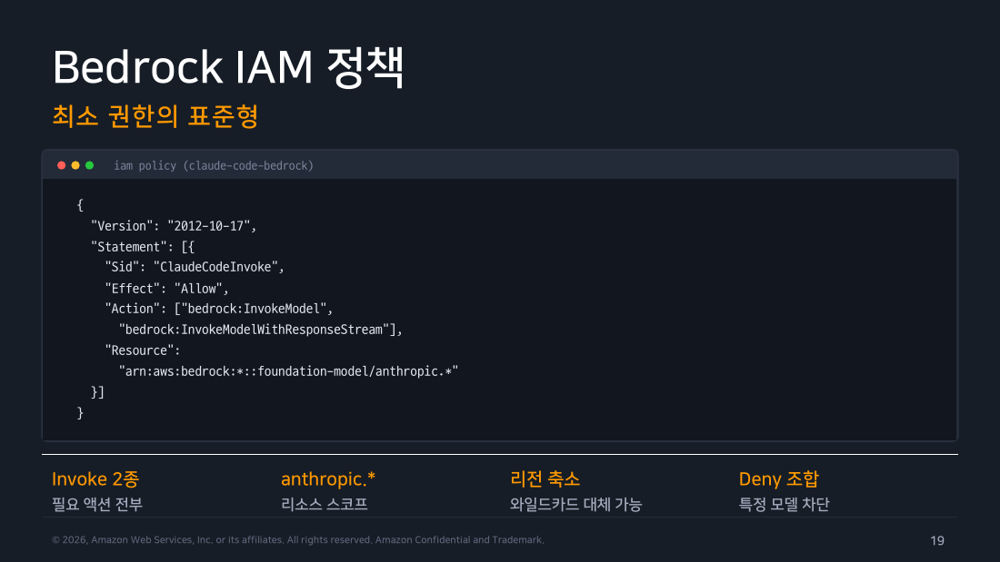
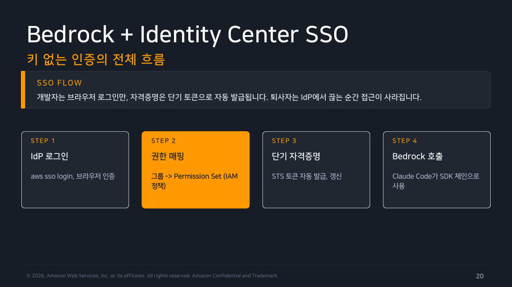
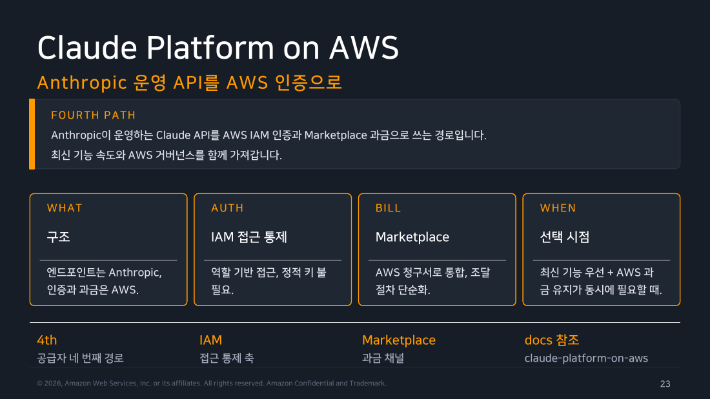
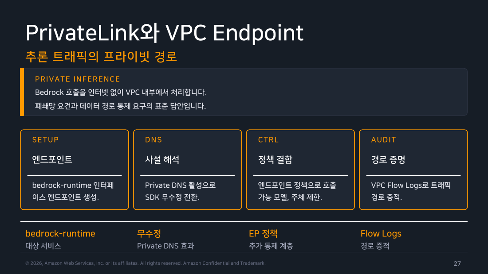

Part 2 — 공급자와 자격증명¶
한 줄 요약¶
조직이 어떤 공급자를 표준으로 삼을지는 이미 쓰고 있는 클라우드 거버넌스를 무엇으로 상속할 것인가로 거의 결정됩니다. 거버넌스란 누가 무엇을 쓸 수 있는지 정하고 그 기록을 남기는 조직의 통제 체계를 말합니다.
그 위에 얹을 자격증명 설계의 목표는 단 하나입니다. 사람 손에 정적 키를 쥐여주지 않는 것. 정적 키란 한 번 발급하면 만료 없이 계속 쓰이는 긴 문자열, 즉 API 키를 말합니다.
왜 알아야 하나¶
개인이 Claude Code를 쓸 때 인증은 "브라우저에서 로그인 한 번"으로 끝납니다. 조직에서는 같은 문제가 전혀 다른 모양으로 나타납니다.
"개발자 40명에게 API 키를 어떻게 나눠주지?" "그 사람 어제 퇴사했는데, 받아 간 키는 어떻게 회수하지?" "이번 달 청구서에 찍힌 이 호출, 누가 한 건지 증명할 수 있나?"
세 질문의 정답은 전부 같습니다. 키를 나눠주지 않으면 됩니다. 나눠준 적이 없으면 회수할 것도 없고 유출될 것도 없습니다. 누가 호출했는지는 IdP(Identity Provider) 세션이 이미 알고 있습니다. IdP는 사내 로그인을 중앙에서 관리하는 시스템으로, 사내 Okta·Google Workspace 로그인 화면을 떠올리면 됩니다.
이 파트는 그 "키 없는 인증"을 실제로 어떻게 구성하는지를 다룹니다. 순서는 이렇습니다. 먼저 공급자를 고르는 기준을 보고, 그다음 Bedrock의 IAM 정책(AWS에서 "누가 무엇을 할 수 있는가"를 적어두는 권한 문서)을 봅니다. 이어서 Identity Center SSO(사내 계정으로 한 번 로그인하면 AWS 접근까지 이어지는 방식)를 구성합니다. 마지막으로 그래도 키가 필요한 경우, 즉 사람이 아니라 기계나 공유 서비스가 호출하는 경우를 위한 볼트(vault, 비밀번호·키를 암호화해서 중앙에 보관하는 저장소) 연동과 키 교체 절차를 다룹니다.
1. 조직은 어떤 공급자를 표준으로 정하는가¶
1주차 Part 4에서 인증 경로 여섯 가지를 "누가 쓰는가" 기준으로 갈랐다면, 관리자의 질문은 방향이 다릅니다. 개인이 무엇을 고르느냐가 아닙니다. 조직이 무엇 하나를 표준으로 못박고 나머지를 예외 처리할 것인가입니다.
이 질문을 가르는 축은 세 개입니다.
- 통제를 어디에서 상속할 것인가? AWS 통제 체계가 이미 돌아가는 조직이라면, 새 벤더 콘솔에 감사 체계를 하나 더 만드는 것보다 Bedrock으로 들어오는 편이 압도적으로 싸게 먹힙니다.
- 과금을 어느 청구서에 붙일 것인가? 새 벤더와 계약하고 결제 수단을 등록하는 조달 절차는 생각보다 오래 걸립니다.
- 엔드포인트를 하나로 모아야 하는가? 여러 공급자를 동시에 쓰거나 모든 호출을 한 곳에 기록해야 한다면 게이트웨이가 답입니다.
첫 번째 항목에서 말한 "AWS 통제 체계"의 대표 선수 두 개만 짚고 가겠습니다. SCP(Service Control Policy)는 조직 전체에 "이 계정들은 이 서비스를 못 쓴다"를 걸어두는 상위 정책입니다. CloudTrail은 누가 어떤 AWS API를 호출했는지 자동으로 쌓이는 감사 로그입니다. 이 문서에서 계속 나오니 기억해두세요.
flowchart TD
S{"조직에 이미 자리 잡은<br/>거버넌스 축이 있는가?"}
S -->|"없음 — 인프라 부담 없이 바로 시작"| T["<b>Teams / Enterprise</b><br/>좌석제 구독<br/><i>공식 admin-setup 기본 권장</i>"]
S -->|"자동화·파이프라인이 주 사용처"| C["<b>Claude Console</b><br/>API 우선 · 종량 과금"]
S -->|"퍼블릭 클라우드 표준이 있음"| CL{"어느 클라우드의<br/>통제를 상속할 것인가?"}
S -->|"여러 공급자 혼용 · 전사 로깅 필수"| G["<b>LLM gateway</b><br/>단일 엔드포인트로 수렴<br/><i>Part 3 apps gateway</i>"]
CL -->|AWS| AW{"최신 기능 속도와<br/>AWS 과금 중 무엇이 우선인가?"}
CL -->|GCP| V["<b>Google Vertex AI</b><br/>GCP IAM · 조직 정책 상속"]
CL -->|Azure| F["<b>Microsoft Foundry</b><br/>Entra ID · Azure Policy 상속"]
AW -->|"AWS 컴플라이언스·리전 통제 우선"| B["<b>Amazon Bedrock</b><br/>IAM · SSO · PrivateLink 그대로"]
AW -->|"Anthropic 최신 기능 우선"| P["<b>Claude Platform on AWS</b><br/>엔드포인트는 Anthropic,<br/>인증·과금은 AWS"]
style S fill:#673ab7,stroke:#4527a0,stroke-width:3px,color:#fff
style CL fill:#fff3e0,stroke:#f57c00,color:#000
style AW fill:#fff3e0,stroke:#f57c00,color:#000
style T fill:#e8f5e9,stroke:#388e3c,color:#000
style C fill:#e3f2fd,stroke:#1976d2,color:#000
style G fill:#ede7f6,stroke:#673ab7,color:#000
style B fill:#fff8e1,stroke:#ffa000,color:#000
style V fill:#fff8e1,stroke:#ffa000,color:#000
style F fill:#fff8e1,stroke:#ffa000,color:#000
style P fill:#fff8e1,stroke:#ffa000,color:#000교재가 권고하는 기본값은 좌석제(Teams/Enterprise) 입니다. 좌석제란 쓰는 사람 수만큼 매달 정액을 내는 구독 방식입니다. 인프라를 하나도 세우지 않아도 되고, claude.ai와 관리 화면이 하나로 통합된다는 게 권고 이유입니다. 실제로 이 선택지를 건너뛰는 조직은 대부분 "이미 클라우드 통제 체계가 있어서 그걸 상속하는 게 더 싸다"고 판단한 경우입니다.
Claude Console은 사람이 앉아서 쓰는 양보다 자동화 파이프라인이 호출하는 양이 훨씬 많은 조직에 맞습니다. 종량 과금(쓴 만큼만 내는 방식)이라 좌석 수와 호출량이 비례하지 않는 형태에 유리합니다.
Bedrock · Vertex · Foundry는 셋 다 성격이 같습니다. 새 통제 체계를 만드는 대신 이미 있는 것을 상속합니다. AWS라면 IAM 정책·SCP·CloudTrail·PrivateLink가 그대로 적용됩니다. PrivateLink는 인터넷을 거치지 않고 VPC 안에서 AWS 서비스에 직접 붙는 사설 연결로, 뒤 §10에서 자세히 다룹니다. 청구서도 기존 AWS 계정에 합쳐집니다.
이 차이는 보안 심사에서 크게 벌어집니다. "새 SaaS 벤더를 추가한다"가 아니라 "이미 쓰던 AWS 서비스 하나를 켠다"가 되기 때문입니다. 설득해야 할 상대도, 준비할 자료도 완전히 달라집니다.
혼합(LLM gateway) 은 위 선택이 하나로 안 끝날 때입니다. 팀마다 다른 공급자를 쓰거나, 모든 호출을 한 곳에 기록해야 하는 규제 요건이 있는 경우입니다. 이럴 때는 게이트웨이를 하나 두고 모든 호출이 그 한 곳을 지나가게 만듭니다. 이건 Part 3에서 본격적으로 다룹니다.
현장 메모 — 결정표는 '무엇이 최선인가'가 아니라 '무엇을 이미 갖고 있는가' 표입니다
이 표를 처음 보면 기능 비교표처럼 읽힙니다. 하지만 위 결정 트리에서 실제로 갈림길을 만드는 항목을 보면 성능이나 기능이 아니라 감사 기록을 어디에 쌓을 것인가와 새 벤더 조달 절차를 탈 것인가입니다. 어느 경로를 골라도 호출되는 모델 자체는 같기 때문에, 차이가 남는 지점이 조직 절차 쪽으로 몰리는 구조입니다. 그래서 이 결정을 개발팀 단독으로 정하면 이후 보안·재무 검토 단계에서 뒤집힐 수 있습니다. 개발팀이 먼저 Console로 시작해두면 나중에 Bedrock으로 옮길 때 부담이 커지는데, 인증 코드를 고치는 것보다 이미 승인받아 놓은 조직 정책 문서를 다시 쓰는 일이 훨씬 오래 걸리기 때문입니다.
2. 인증 우선순위 — 관리자는 이걸 어떻게 강제하는가¶
1주차 Part 4에서 자세히 다룬 내용을 관리자 관점으로 한 번만 다시 짚겠습니다. 한 컴퓨터에 자격증명이 여러 개 동시에 존재할 수 있습니다. 그럴 때 Claude Code는 정해진 순서대로 위에서부터 훑어 내려가다가 먼저 발견한 것 하나만 쓰고 나머지는 무시합니다. 교재가 Chapter 3에서 다시 꺼내는 순서는 네 단계입니다.
CLAUDE_CODE_USE_BEDROCK/USE_VERTEX/USE_FOUNDRY강제 스위치(1순위): 어느 공급자를 쓸지 자체를 못박는 환경변수입니다. 조직 표준을 강제하는 지점이 바로 여기입니다.ANTHROPIC_API_KEY(2순위): 환경변수에 넣어둔 정적 키입니다. CI(코드를 자동으로 빌드·테스트하는 서버)와 서버 자동화가 쓰는 경로인 동시에, 개인 머신에 남아 있으면 사고를 내는 경로이기도 합니다.apiKeyHelper(3순위): 키를 직접 적어두는 대신 "키를 가져오는 스크립트"를 등록하는 설정입니다(§8에서 자세히). 볼트를 붙이는 지점입니다.- OAuth 토큰(4순위): 브라우저 로그인으로 발급되는 토큰입니다.
setup-token으로 만든 장기 토큰과 claude.ai 로그인 세션이 여기 속합니다.
1주차에서 이 순서는 "내 결제가 왜 엉뚱하게 나가지" 를 푸는 도구였습니다. 관리자 입장에서 같은 순서는 정반대 방향으로 읽힙니다. 강제 스위치가 최상위라는 사실이 곧 조직 표준을 강제할 수 있는 근거가 되기 때문입니다. 개인이 .zshrc(셸을 열 때마다 자동 실행되는 개인 설정 파일)에 뭘 넣어뒀든, 조직이 1순위를 심어두면 공급자 선택은 개인이 뒤집을 수 없습니다.
반대로 2순위가 걱정거리입니다. 개발자가 예전 프로젝트에서 받은 ANTHROPIC_API_KEY를 .zshrc에 남겨뒀다고 해봅시다. 그 키 하나가 3·4순위를 전부 이깁니다. 조직이 Bedrock을 표준으로 정했더라도 1순위 스위치를 안 심었다면 그 개발자 한 명의 호출은 조용히 Console 쪽으로 나가서 따로 청구됩니다. 아무도 모르다가 감사에서 뒤늦게 발견됩니다.
그래서 관리자가 할 일은 두 가지로 압축됩니다. 1순위를 조직이 소유할 것. 그리고 2순위인 정적 키를 애초에 조직 안에 존재하지 않게 만들 것. 이 파트의 나머지가 전부 두 번째 이야기입니다.
Note
이 네 단계는 전체 목록의 부분집합입니다. 공식문서(authentication)의 완전한 순서는 7단계입니다. 공급자 스위치(CLAUDE_CODE_USE_BEDROCK/_VERTEX/_FOUNDRY) → ANTHROPIC_AUTH_TOKEN → ANTHROPIC_API_KEY → apiKeyHelper → CLAUDE_CODE_OAUTH_TOKEN(setup-token) → Anthropic profile 또는 Workload Identity Federation 자격증명 → /login 구독 OAuth 순입니다.
교재가 압축한 네 단계는 이 7단계에서 몇 개를 뺀 것일 뿐, 서로의 앞뒤 순서는 공식 목록과 어긋나지 않습니다. 그래서 관리자 관점 설명으로는 문제가 없습니다. 완전한 목록이 필요하면 1주차 Part 4나 공식문서를 참고하세요.
한편 Part 3에서 다룬 게이트웨이 세션은 이 7단계 전체보다도 위에서 작동합니다. 공급자를 고르는 단계 자체를 대체해버리기 때문입니다.
3. Bedrock 설정 개요 — 조직 표준 환경 구성¶
Bedrock 경로를 켜는 것 자체는 환경변수 두 줄이면 끝납니다. 문제는 이걸 개발자 40명에게 각자 넣으라고 안내하면 반드시 빠뜨리는 사람이 나온다는 점입니다. 그래서 조직 배포에서는 셸 프로파일에 심어 모든 세션에 자동 적용합니다. 셸 프로파일이란 터미널을 열 때마다 자동으로 실행되는 설정 파일을 말합니다.
# /etc/profile.d/claude.sh — 조직 표준 프로파일
export CLAUDE_CODE_USE_BEDROCK=1
export AWS_REGION=ap-northeast-2
# 모델 alias는 리전 가용성에 맞춰 해석됨
# 필요 시 인퍼런스 프로파일 ID로 고정
# export ANTHROPIC_MODEL=apac.anthropic.claude-sonnet-4-5-20250929-v1:0
여기서 세 가지가 각각 다른 문제를 담당합니다.
CLAUDE_CODE_USE_BEDROCK=1: 앞 절의 1순위 강제 스위치입니다. 이게 있으면 개인 환경에 뭐가 남아 있든 공급자는 Bedrock으로 고정됩니다.AWS_REGION: 어느 AWS 리전(데이터센터가 있는 지역)으로 호출할지 정합니다. 단순한 지역 설정이 아니라 어떤 모델을 쓸 수 있는지와 응답이 얼마나 빠른지를 동시에 결정합니다. 모델마다 제공되는 리전이 다르기 때문에, 리전을 잘못 잡으면 "왜 이 모델만 안 되지"가 됩니다.ANTHROPIC_MODEL(선택): 쓸 모델을 정확한 ID로 못박는 옵션입니다.
세 번째를 좀 더 풀어야겠습니다. 평소에는 sonnet, opus 같은 짧은 별명(alias)으로 모델을 지정합니다. 이 별명이 실제로 어떤 모델을 가리키는지는 Claude Code가 그때그때 해석합니다. 편하지만, 해석 결과가 버전에 따라 바뀝니다.
실제로 Claude Code 버전이 올라가면서 opus 별명의 해석이 바뀌어 단가가 더 높은 모델로 조용히 넘어간 전례가 있습니다(1주차에서 확인). 개인이라면 그러려니 하겠지만 40명이 쓰는 배포에서는 청구서에 바로 나타납니다. 그래서 위 예시에서 주석 처리해둔 ANTHROPIC_MODEL 줄은 조직 배포에서는 사실상 필수에 가깝습니다. 여기에 넣는 인퍼런스 프로파일 ID(apac.anthropic.claude-... 같은, 리전과 모델 버전까지 특정하는 전체 식별자)는 해석의 여지가 없습니다. 별명은 개인 실험용, 조직 배포는 프로파일 ID 고정으로 나누어 생각하세요.
개발자가 실제로 쓸 때는 AWS의 표준 자격증명 체계를 그대로 탑니다. Claude Code만을 위한 별도 로그인 절차가 없다는 뜻입니다.
마지막 /status 확인을 배포 절차에 넣어두세요. 강제 스위치가 제대로 먹었는지 개인이 스스로 확인할 수 있는 유일한 지점입니다.
현장 메모 — /etc/profile.d에 넣어도 터미널에 따라 안 먹습니다
/etc/profile.d/*.sh는 로그인 셸에서만 읽힙니다. 로그인 셸이란 사용자가 시스템에 로그인할 때 시작되는 셸을 말하는데, 터미널을 여는 방식에 따라 이게 아닐 수 있습니다. macOS 터미널 앱의 기본 설정, VS Code 통합 터미널, zsh 사용자의 .zshrc 경로에서는 이 파일이 그냥 건너뛰어집니다.
그래서 조직 배포라면 셸 프로파일 하나에 의존하면 안 됩니다. managed settings의 env 블록(Part 5 참고)으로 심는 쪽이 훨씬 확실합니다. managed settings는 관리자가 배포하는 최상위 설정 파일이라 셸 종류·터미널 종류를 타지 않고, 개인이 덮어쓸 수도 없습니다.
정리하면 이렇습니다. 셸 프로파일은 "대부분의 사람에게 편의로 깔아두는 것"이고, 강제는 managed settings로 합니다.
4. Bedrock IAM 정책 — 최소 권한의 실제 모양¶
Bedrock 경로에서 접근 통제는 IAM 정책 하나로 수렴합니다. IAM 정책은 "어떤 주체가(Principal), 어떤 동작을(Action), 어떤 대상에(Resource) 할 수 있는가"를 JSON으로 적어둔 권한 문서입니다.
교재가 제시하는 최소형은 동작 두 개만 허용합니다. InvokeModel(모델을 한 번 호출해 답을 통째로 받기)과 InvokeModelWithResponseStream(답을 한 글자씩 흘려받기)입니다. 대상은 anthropic.* 파운데이션 모델로 한정합니다. 파운데이션 모델은 Bedrock에서 제공하는 기본 모델을 가리키는 용어입니다.
여기서 스트리밍 쪽을 빠뜨리면 Claude Code의 대화형 사용이 전부 막힙니다. 그러니 두 개는 항상 세트로 생각해야 합니다.
대상 범위는 두 방향으로 더 조일 수 있습니다.
- 리전을 좁히는 방향. ARN(AWS의 모든 리소스에 붙는 고유 주소 문자열)에서 리전 자리를
*대신 실제 승인된 리전으로 바꾸면, 데이터가 처리되는 지역을 정책 수준에서 강제할 수 있습니다. - 특정 모델만 막는 방향. Allow는 넓게 두고 별도
Deny문을 하나 얹는 조합이 관리하기 쉽습니다. IAM에서Deny는 무조건Allow를 이기기 때문입니다.

▲ 교재 슬라이드 19 — Bedrock IAM 정책
다만 이 최소형은 말 그대로 최소형입니다. 실무에서는 cross-region inference profile을 거의 반드시 쓰게 됩니다. 이건 한 리전에 요청이 몰리면 AWS가 알아서 다른 리전으로 넘겨주는 구조로, 이때 호출 대상이 개별 모델이 아니라 "인퍼런스 프로파일"이라는 별도 리소스가 됩니다. 그래서 허용할 동작과 대상을 더 넓혀야 합니다.
여기에 §직접 해보기에서 신규 AWS 계정에 실제로 배포하며 겪은 함정 두 개까지 반영한 권장 형태는 이렇습니다. 함정 두 개는 List 계열 동작을 별도 문장으로 분리해야 한다는 것, 그리고 Marketplace 구독 권한이 필요하다는 것입니다. 각각 코드 아래에서 설명합니다.
{
"Version": "2012-10-17",
"Statement": [
{
"Sid": "ClaudeCodeInvoke",
"Effect": "Allow",
"Action": [
"bedrock:InvokeModel",
"bedrock:InvokeModelWithResponseStream",
"bedrock:GetInferenceProfile"
],
"Resource": [
"arn:aws:bedrock:*:*:inference-profile/*",
"arn:aws:bedrock:*:*:application-inference-profile/*",
"arn:aws:bedrock:*::foundation-model/anthropic.*"
]
},
{
"Sid": "ClaudeCodeList",
"Effect": "Allow",
"Action": ["bedrock:ListFoundationModels", "bedrock:ListInferenceProfiles"],
"Resource": "*"
},
{
"Sid": "ClaudeCodeMarketplace",
"Effect": "Allow",
"Action": ["aws-marketplace:ViewSubscriptions", "aws-marketplace:Subscribe"],
"Resource": "*",
"Condition": { "StringEquals": { "aws:CalledViaLast": "bedrock.amazonaws.com" } }
}
]
}
세 가지를 짚겠습니다.
첫째, foundation-model/*만 허용한 정책으로는 인퍼런스 프로파일 호출이 동작하지 않습니다. 교재 슬라이드의 리소스 목록만 그대로 복사해서 cross-region 프로파일을 쓰면 여기서 막힙니다.
둘째, ListFoundationModels/ListInferenceProfiles는 반드시 별도 Statement로 빼야 합니다. 이 둘은 "이 계정에 어떤 모델이 있는지 목록을 달라"는 동작이라, 애초에 특정 리소스 하나를 겨냥하는 동작이 아닙니다. Invoke 계열과 같은 Statement에 묶고 리소스를 좁게 잡으면 조용히 AccessDeniedException(권한 없음 오류)이 납니다. §직접 해보기에서 실제로 겪었습니다.
셋째, aws-marketplace:* 문은 신규 계정이 특정 Anthropic 모델을 처음 호출할 때 자동으로 구독 처리가 되도록 하는 권한입니다.
현장 메모 — GetInferenceProfile 누락은 '되긴 되는' 종류의 실수라 더 위험합니다
1주차에서 확인했듯, 이 권한이 없어도 Claude Code는 다른 형태로 한 번 더 시도해서 결과적으로는 성공합니다. 그래서 개인 개발 머신에서는 "좀 느린가?" 정도로 지나갑니다.
관리자 관점에서는 계산이 달라집니다. 새 모델을 처음 만날 때마다 서버 왕복이 한 번씩 더 붙습니다. 이게 40명 × 하루 수십 세션으로 곱해지면 전체 지연 시간과 Bedrock API 호출량 양쪽에서 눈에 보이는 크기가 됩니다.
게다가 에러가 나지 않으니 사용자 입장에서는 문제로 인지해 신고할 계기 자체가 없습니다. 원인을 찾으려면 CloudTrail 로그에서 "한 번 실패하고 다시 시도하는" 패턴을 직접 뒤져야 합니다. 특히 정책을 좁게 잡기 쉬운 AWS_BEARER_TOKEN_BEDROCK 기반 배포에서는 이 한 줄이 빠지기 쉽습니다.
배포 전에 정책에 한 줄 넣는 비용이 사후에 원인을 추적하는 비용보다 압도적으로 쌉니다.
조직 차원에서는 여기서 두 겹을 더 쌓을 수 있습니다. 하나는 IAM 정책 위에 SCP를 얹어 계정 경계에서 한 번 더 막는 것입니다. 개별 정책이 실수로 넓게 열려도 SCP가 상위에서 잘라줍니다. 다른 하나는 Claude Code 전용 AWS 계정을 따로 파는 것인데, 비용 추적과 접근 통제가 한꺼번에 단순해집니다. 둘 다 공식 권장 사항입니다.
5. Bedrock + Identity Center SSO — 키 없는 인증의 전체 흐름¶
앞 절까지가 "무엇을 허용할 것인가"였다면, 이 절은 "그 권한을 사람에게 어떻게 전달할 것인가" 입니다. 그리고 이 설계의 핵심 주장은 하나입니다. 전달할 키 자체를 만들지 않습니다.
개발자가 하는 일은 브라우저 로그인 한 번뿐입니다. 그 뒤로 자격증명은 몇 시간이면 만료되는 단기 토큰으로 자동 발급되고, 만료 전에 자동으로 갱신됩니다. 개발자의 디스크 어디에도 오래 사는 비밀이 남지 않습니다.
그래서 퇴사자는 IdP에서 계정을 끊는 순간 접근 경로가 통째로 사라집니다. 회수할 키가 없으니 회수 절차도 필요 없습니다.

▲ 교재 슬라이드 20 — Bedrock + Identity Center SSO
흐름은 네 단계로 나뉩니다.
- 1단계 IdP 로그인:
aws sso login명령이 브라우저를 열고, 사내 IdP 로그인 화면에서 인증합니다. 사람이 개입하는 유일한 지점입니다. - 2단계 권한 매핑: IdP의 그룹이 Identity Center의 Permission Set에 연결됩니다. Permission Set은 IAM Identity Center에서 "이 그룹은 이 권한을 갖는다"를 정의하는 단위이고, 그 안에 앞 절의 IAM 정책이 들어갑니다. 결과적으로 "누가 Claude Code를 쓸 수 있는가"가 IdP 그룹에 들어 있느냐 하나로 정리됩니다.
- 3단계 단기 자격증명: STS(AWS가 임시 토큰을 발급하는 서비스, Security Token Service)가 몇 시간짜리 토큰을 발급하고, 만료 전에 자동으로 갱신합니다.
- 4단계 Bedrock 호출: Claude Code는 특별한 일을 하지 않습니다. AWS SDK가 원래 쓰던 자격증명 탐색 순서를 그대로 타고,
AWS_PROFILE환경변수가 가리키는 프로파일을 읽어 호출합니다.
4단계에서 "Claude Code가 특별한 일을 하지 않는다"는 게 이 설계의 가장 좋은 점입니다. Claude Code만을 위한 인증 코드가 없다는 뜻이기 때문입니다. 그건 곧 이미 검증받아 놓은 AWS SSO 운영 절차를 그대로 재사용한다는 뜻이기도 합니다. 새로 만들 것도, 새로 감사받을 것도 없습니다.
▲ 개발자 브라우저 로그인 → IdP → 단기 자격증명 발급 → Bedrock 호출, IdP 세션 종료 시 경로 소멸
현장 메모 — 온보딩·오프보딩 비용이 0에 가까워지는 게 이 설계의 실질적 이득입니다
정적 키 방식에서 신규 입사자에게 Claude Code를 열어주려면 할 일이 많습니다. 키를 발급하고, 안전한 경로로 전달하고, 어디에 저장했는지 관리하고, 대장에 기록해야 합니다. 퇴사할 땐 그걸 역순으로 밟아야 하고요.
SSO 방식에서는 입사자를 기존 IdP 그룹에 넣는 것으로 끝나고, 퇴사자는 그룹에서 빼는 것으로 끝납니다. 그리고 그 그룹 관리는 이미 다른 수십 개 시스템 때문에 돌아가고 있습니다. Claude Code를 위해 새로 만드는 절차가 문자 그대로 하나도 없습니다.
감사 대응도 마찬가지입니다. CloudTrail 로그의 userIdentity 항목에 Permission Set 이름과 IdP 사용자 이름이 그대로 찍힙니다. 그래서 "이 호출을 누가 했는가"에 별도 기록 체계 없이 답할 수 있습니다. 여러 사람이 같은 정적 키를 쓰는 방식에서는 이 질문의 답이 아예 나오지 않습니다.
6. Claude Platform on AWS — 네 번째 경로¶
교재는 여기서 2026년에 추가된 네 번째 경로를 소개합니다. 이름은 Claude Platform on AWS입니다. 구조를 한 문장으로 말하면 실제 요청을 받는 서버(엔드포인트)는 Anthropic이 운영하고, 인증과 과금만 AWS를 쓰는 형태입니다.
기존 세 경로와 나란히 놓으면 위치가 분명해집니다. Bedrock은 인증·과금은 물론 모델을 실제로 돌리는 일까지 전부 AWS가 합니다. 반대로 Console은 인증·과금·모델 실행이 전부 Anthropic입니다.
이 네 번째 경로는 그 사이를 가릅니다. 호출은 Anthropic이 운영하는 API로 나갑니다. 하지만 접근 통제는 IAM 역할로 하고, 청구는 AWS Marketplace를 거쳐 AWS 청구서에 합쳐집니다.

▲ 교재 슬라이드 23 — Claude Platform on AWS
이 경로가 답이 되는 상황은 꽤 구체적입니다. Anthropic이 새 기능을 내면 곧바로 쓰고 싶은데, 조달과 과금은 AWS 밖으로 나갈 수 없는 조직입니다.
Bedrock은 AWS를 한 번 거치는 만큼 새 모델과 새 기능이 도착하기까지 시차가 생깁니다. 그 시차가 실제로 문제가 되는 팀이 있습니다. 그렇다고 Console로 가자니 새 벤더 계약과 별도 청구서 때문에 조달 절차를 처음부터 다시 밟아야 합니다. 이 경로는 그 두 요구를 한 번에 처리합니다.
정적 키가 필요 없다는 점은 Bedrock과 같습니다. IAM 역할로 접근하는 방식이라 앞 절의 SSO 설계가 그대로 얹힙니다.
비교적 최근에 추가된 경로입니다
교재가 2026년 신설 경로로 소개하고 있는데, 공식문서에는 시기를 특정하는 표현이 없어 정확한 출시 시점은 확인하지 못했습니다. 다만 공식문서에 preview·beta 표기 없이 정식 기능으로 서술돼 있는 건 확인했습니다.
켜는 방법은 값 두 개를 넣는 것입니다. CLAUDE_CODE_USE_ANTHROPIC_AWS=1, 그리고 필수 헤더인 ANTHROPIC_AWS_WORKSPACE_ID입니다. 주의할 점이 있는데, 다른 클라우드 스위치(Bedrock·Foundry)가 켜져 있으면 그쪽이 우선권을 가져갑니다. 공식문서가 명시하는 건 이 두 경로뿐이니, 켜져 있다면 둘 다 꺼야 합니다.
지원 리전, 쓸 수 있는 모델 범위, Marketplace 조달 절차는 앞으로 계속 바뀔 여지가 큽니다. 실제 도입을 검토한다면 공식 문서의 현재 상태를 반드시 직접 확인하세요.
현장 메모 — 인증이 AWS라고 해서 데이터 경로까지 AWS인 것은 아닙니다
"AWS 인증"이라는 말 때문에 Bedrock과 같은 것으로 오해하기 쉽습니다. 하지만 실제 데이터가 흘러가는 목적지가 다릅니다. Bedrock은 AWS 계정 경계 안에서 처리되고, 뒤에 볼 PrivateLink를 쓰면 인터넷을 아예 거치지 않습니다. 반면 이 경로는 Anthropic이 운영하는 서버로 나갑니다. 폐쇄망 요건(사내 시스템이 인터넷과 직접 통신하면 안 된다는 보안 요건)이 있거나 "데이터가 AWS 밖으로 나가지 않는다"는 조건이 걸린 조직이라면, 이 차이가 보안 심사에서 쟁점이 될 가능성이 높습니다. 그런 심사는 무엇으로 인증했는지가 아니라 데이터가 어느 경계를 넘어가는지를 기준으로 판단하기 때문입니다. 인증 방식이 같다는 이유로 같은 심사 결과를 기대하면 안 됩니다. 심사에 올릴 때 "무엇으로 인증하는가"와 "데이터가 어디로 가는가"를 분리해서 설명하세요.
7. API Key 분배 — 왜 이 방식이 실패하는가¶
지금까지 SSO를 길게 다룬 이유가 있습니다. 그 대안인 "키 나눠주기"가 실무에서 거의 반드시 사고로 이어지기 때문입니다. 교재는 이걸 유출·이직·회전의 3중 부담이라고 정리합니다. 하나씩 뜯어보면 이렇습니다.
- 유출 경로가 너무 많습니다. 키가 사람 손에 있는 순간 커밋, 로그, 슬랙 DM, 스크린샷, 로컬 백업으로 새어 나갈 수 있습니다. 이건 개인이 조심성이 없어서 생기는 문제가 아니라 새어 나갈 수 있는 경로의 개수 문제입니다. 그래서 교육으로 0이 되지 않습니다.
- 퇴사 시 회수가 불가능합니다. 키는 복사되는 물건이라 "반납"이라는 개념이 없습니다. 정직하게 하려면 그 사람이 접근했을 가능성이 있는 키를 전부 새것으로 바꿔야 합니다. 그건 곧 나머지 사람 전원에게 새 키를 다시 나눠주는 일입니다.
- 누가 했는지 알 수 없습니다. 한 팀이 같은 키를 공유하면 호출 로그만 봐서는 구분이 안 됩니다. 비용이 갑자기 튀어도 범위를 좁힐 수가 없습니다.
- 감사 기록에 공백이 생깁니다. 위 세 개가 합쳐지면 "이 접근이 허가된 것이었다"를 증명할 방법이 없어집니다. 감사에서 가장 아픈 지점입니다.
그래서 대안은 호출하는 주체별로 다른 경로를 쓰는 것입니다. 사람에게는 SSO 단기 토큰을 씁니다. 기계에는 볼트와 헬퍼 스크립트를 씁니다. CI 파이프라인에는 OIDC 페더레이션을 씁니다.
세 번째가 낯설 텐데, OIDC(OpenID Connect, 표준 신원 확인 규약) 페더레이션은 이런 방식입니다. GitHub Actions 같은 CI가 실행될 때마다 발급받는 신원 증명서를 AWS가 신뢰하고, 그 자리에서 AWS 권한으로 바꿔줍니다. 그래서 미리 발급받은 키를 CI 저장소에 넣어둘 필요가 없어집니다.
이 셋을 실제로 관철하려면 환경변수에 키를 직접 적어넣는 것을 전면 금지한다고 정책에 못박아야 합니다. 예외를 하나 열어두면 결국 그 경로로 전부 흘러갑니다.
현장 메모 — '일단 키로 시작하고 나중에 SSO로 옮기자'는 나중에 비용을 크게 치릅니다
시범 도입 단계에서 키 몇 개 발급해서 시작하는 게 당장은 빠릅니다. 문제는 그 키가 어디까지 퍼졌는지 아무도 모르는 상태로 규모가 커진다는 것입니다. 6개월 뒤 SSO로 전환할 때 기존 키를 그냥 끄면, 어디선가 조용히 돌던 스크립트가 죽습니다. 그래서 못 끕니다. "SSO 전환 완료"라고 보고된 뒤에도 예전 키가 어딘가에 남아 계속 청구되는 상황이 생길 수 있습니다. 어디까지 퍼졌는지 추적이 안 되는 채로 규모가 커지면, 나중에 끄려고 해도 어떤 스크립트가 그 키에 의존하는지 알 수 없어 못 끄게 되기 때문입니다. 시범 도입이라도 인증 방식만은 최종 형태로 시작하세요. 시범 단계에서 줄여야 할 건 인증 설계가 아니라 사용자 수입니다.
8. apiKeyHelper — 그래도 키가 필요하다면 동적으로¶
사람에게는 SSO로 끝납니다. 하지만 공유 서비스나 새벽에 자동 실행되는 배치 작업처럼 브라우저 로그인을 해줄 사람이 없는 주체에는 여전히 키가 필요합니다. 이때 쓰는 게 apiKeyHelper입니다.
apiKeyHelper는 Claude Code 설정 항목 하나입니다. 핵심 발상은 키를 설정 파일에 적어두는 대신, 키를 가져오는 스크립트의 경로를 적어두는 것입니다. 설정 파일에는 경로만 있고, 실제 키는 Secrets Manager(AWS가 제공하는 볼트 서비스) 같은 중앙 저장소에만 존재합니다.
// ~/.claude/settings.json
{
"apiKeyHelper": "/opt/claude/get-key.sh",
"env": {
"CLAUDE_CODE_API_KEY_HELPER_TTL_MS": "300000"
}
}
헬퍼 스크립트가 할 일은 하나뿐입니다. 화면 출력(표준 출력)으로 키 문자열만 뱉으면 됩니다. Claude Code가 그 출력을 읽어 키로 씁니다.
#!/bin/bash
# /opt/claude/get-key.sh
aws secretsmanager get-secret-value \
--secret-id claude/team-api-key \
--query SecretString --output text
여기서 진짜 중요한 건 CLAUDE_CODE_API_KEY_HELPER_TTL_MS입니다. TTL(Time To Live)은 "한 번 가져온 값을 얼마 동안 재사용할 것인가"를 뜻하고, 단위는 밀리초입니다. 위 예시의 300000은 5분입니다.
즉 Claude Code는 5분마다 헬퍼 스크립트를 다시 실행해서 키를 새로 가져옵니다. 그래서 볼트에서 키를 갈아 끼우면 늦어도 5분 안에 모든 클라이언트에 자동으로 반영됩니다. 키를 바꿀 때 아무에게도 연락할 필요가 없다는 뜻이고, 이게 다음 절에서 볼 키 교체 절차의 전제가 됩니다.
현장 메모 — 헬퍼 스크립트 자체가 새로운 공격면입니다
apiKeyHelper는 Claude Code가 주기적으로 실행하는 셸 스크립트입니다. 내용에 제한이 없습니다. 그러니 이 파일을 수정할 수 있는 사람은 사실상 그 자격증명으로 무엇이든 할 수 있습니다.
그래서 두 가지를 지켜야 합니다. 첫째, /opt/claude/get-key.sh는 root 소유로, 권한은 0755(소유자만 수정 가능, 나머지는 읽고 실행만) 로 배포하세요. 둘째, 헬퍼 경로를 managed settings에서 지정하세요. 개인 설정 파일인 ~/.claude/settings.json에 맡기면 각자 자기 스크립트로 바꿔치기할 수 있어서, 통제가 아니라 권고가 됩니다.
하나 더 있습니다. 헬퍼가 실패했을 때 에러 메시지를 화면 출력으로 내보내지 않게 하세요. Claude Code는 화면 출력을 그대로 키로 받아들이기 때문에, 실패 문구가 키로 취급되면 "볼트 조회 실패"가 아니라 "인증 거부"로 보이게 되어 원인이 한참 뒤에야 드러납니다.
9. 자격증명 회전 — 무사고로 만드는 절차¶
헬퍼 기반 키는 정기적으로 새것으로 갈아야 합니다. 이걸 회전(rotation)이라고 부릅니다. 회전에서 사고가 나는 이유는 거의 항상 하나입니다. 옛날 키를 너무 빨리 꺼버리기 때문입니다. 그래서 절차의 핵심은 새 키와 옛 키가 둘 다 살아 있는 구간을 의도적으로 만드는 데 있습니다.
- 1단계 이중화. 새 키를 발급해서 볼트에 옛 키와 나란히 저장합니다. 아직 아무것도 전환하지 않습니다.
- 2단계 전환. 볼트가 어느 키를 내줄지만 새 키로 바꿉니다. 이 시점부터 헬퍼를 새로 실행하는 클라이언트는 새 키를 받습니다.
- 3단계 관찰. TTL이 충분히 지날 때까지 기다린 뒤 옛 키의 호출 수가 0인지 확인합니다. 이 단계를 건너뛰는 게 사고의 원인입니다.
- 4단계 폐기. 옛 키를 비활성화하고 감사 기록을 남깁니다.
3단계의 "충분히"가 얼마인지는 TTL이 정해줍니다. TTL이 5분이면 모든 클라이언트는 늦어도 5분 안에 새 키로 넘어갑니다. 그런데도 옛 키 호출이 남아 있다면, 헬퍼를 안 쓰고 키를 어딘가에 직접 적어둔 경로가 있다는 신호입니다. 회전 절차가 그 자체로 하드코딩 탐지기 역할을 하는 셈입니다.
권장 주기는 분기 단위입니다. 그리고 SSO 경로는 이 절차 자체가 필요 없습니다. 회전할 장기 자격증명이 아예 존재하지 않기 때문입니다. 앞에서 "사람에게는 SSO"를 강조한 이유가 여기서 한 번 더 드러납니다. SSO를 표준으로 삼으면 회전이라는 운영 부담이 줄어드는 게 아니라 사라집니다.
10. PrivateLink와 VPC Endpoint — 추론 트래픽의 프라이빗 경로¶
지금까지가 "누가 호출할 수 있는가"였다면, 마지막은 "그 호출이 어디로 흐르는가" 입니다. 폐쇄망 요건이 있는 조직에서는 인증만큼이나 경로가 중요합니다.
답은 AWS의 표준 답안 그대로입니다. PrivateLink는 VPC(내 전용 가상 네트워크) 안에서 인터넷을 거치지 않고 AWS 서비스에 직접 붙는 사설 연결이고, 그 연결의 입구가 VPC Endpoint입니다.
Bedrock의 경우 bedrock-runtime 인터페이스 엔드포인트를 VPC에 만들면 됩니다. 그러면 Bedrock 호출이 인터넷 게이트웨이를 거치지 않고 AWS 내부망 안에서 처리됩니다. 여기에 Private DNS 옵션을 켜면 bedrock-runtime.<region>.amazonaws.com이라는 원래 주소가 VPC 내부 사설 IP로 해석됩니다. 덕분에 Claude Code나 SDK 설정은 한 줄도 바꾸지 않아도 됩니다.
엔드포인트를 두면 통제 계층이 하나 더 생기는 것도 이득입니다. 엔드포인트 정책으로 이 VPC에서 호출할 수 있는 모델과 주체를 제한할 수 있습니다. 또 VPC Flow Logs(VPC를 드나든 통신 기록)로 트래픽이 실제로 사설 경로를 탔다는 증거를 남길 수 있습니다. 감사에서 "인터넷으로 안 나갑니다"를 말이 아니라 로그로 증명하게 됩니다.

▲ 교재 슬라이드 27 — PrivateLink와 VPC Endpoint
현장 메모 — PrivateLink가 안 먹을 때 먼저 볼 곳은 DNS입니다
엔드포인트를 만드는 것만으로는 경로가 바뀌지 않습니다. 실제로 경로를 바꾸는 건 "표준 주소가 사설 IP로 해석되는가"이고, 그래서 실패는 대부분 DNS 단계에서 일어납니다. 엔드포인트를 만들었는데도 트래픽이 계속 인터넷으로 나간다면 순서대로 이걸 보세요.
- Private DNS 활성화 여부. 이걸 끈 채로 만들면 엔드포인트마다 따로 붙는 긴 DNS 이름으로 직접 호출해야 합니다. SDK는 원래의 표준 주소를 쓰기 때문에 그대로 인터넷으로 나갑니다. 설정 한 칸 차이로 조용히 갈리는 지점이라 가장 먼저 확인할 항목입니다.
- VPC의 enableDnsSupport / enableDnsHostnames. VPC 자체의 DNS 기능을 켜는 두 옵션입니다. 둘 다 켜져 있어야 Private DNS가 동작합니다. 오래된 VPC나 인프라 코드 템플릿에서 빠져 있을 수 있습니다.
- 온프레미스(사내에 직접 두고 운영하는 서버)에서 오는 트래픽. Direct Connect나 VPN으로 연결된 사내 네트워크의 DNS 서버는 VPC의 DNS를 보지 않습니다. Route 53 Resolver 인바운드 엔드포인트를 따로 두어야 사내에서도 사설 IP로 해석됩니다. 이걸 놓치면 VPC 안에서만 검증이 통과하고 사내 빌드 서버에서는 그대로 인터넷으로 나가는, 출발지에 따라 결과가 갈리는 상태가 됩니다.
엔드포인트 정책에도 함정이 있습니다. 기본 정책은 전체 허용이라, 만들어두고 손대지 않으면 통제 효과가 전혀 없습니다. 반대로 너무 조이다가 앞서 본 GetInferenceProfile 같은 동작을 빼먹으면 에러 없이 느려지는 그 증상이 여기서 다시 나타납니다.
여기에 빠뜨리기 쉬운 게 하나 더 있습니다. AWS 서비스의 API는 실제 작업을 처리하는 데이터플레인과 설정·조회를 담당하는 컨트롤플레인으로 나뉩니다. GetInferenceProfile과 ListInferenceProfiles는 데이터플레인이 아니라 bedrock 컨트롤플레인 API에 속합니다. 그래서 bedrock-runtime 엔드포인트 정책에 아무리 넣어봐야 그 경로로는 흐르지 않습니다.
완전 폐쇄망에서 프로파일 조회까지 살리려면 com.amazonaws.<region>.bedrock(컨트롤플레인용) 엔드포인트를 bedrock-runtime과 별도로 하나 더 만들어야 합니다. IAM 정책과 두 엔드포인트 정책의 동작 목록은 항상 같이 관리하세요.
11. 자격증명 의사결정 — 주체별 표준 경로¶
지금까지 다룬 걸 "누가 호출하는가"로 정리하면 표준 경로가 다섯 갈래로 확정됩니다.
- 개발자의 일상 사용에는 Bedrock + Identity Center SSO를 씁니다. 목표는 정적 키 0개입니다. 예외 없이 이 경로 하나로 갑니다.
- CI 파이프라인은 OIDC로 역할을 넘겨받는 방식이 1순위입니다. GitHub Actions 같은 CI가 IdP 역할을 하고 AWS 역할을 그 자리에서 넘겨받으므로, 오래 사는 비밀값을 저장해둘 필요가 없습니다. 이게 불가능한 환경에서만
setup-token을 쓰되 필요한 최소 권한으로, 최소 개수만 발급합니다. - 공유 서비스에는 Secrets Manager와
apiKeyHelper를 씁니다. TTL 덕분에 키 교체가 자동으로 퍼집니다. - 폐쇄망은 PrivateLink + SSO입니다. 경로 통제와 인증을 한 번에 해결합니다.
- 예외 승인은 위 넷에 안 들어가는 나머지 전부입니다. 기간 한정, 사유 기록, 자동 만료를 세트로 걸고 감사 대장에 남깁니다.
마지막 항목이 실무에서 제일 중요합니다. 예외를 아예 없앨 수는 없습니다. 문제는 만료 없는 예외가 예외가 아니라 두 번째 표준이 되어버린다는 것입니다. 자동 만료를 기술적으로 강제해두지 않으면, 6개월 뒤에는 아무도 그 예외가 왜 열렸는지 모르는 상태가 됩니다. 예외를 승인할 때 만료일을 함께 시스템에 박아 넣으세요.
직접 해보기¶
Bedrock + IAM Identity Center SSO 패턴을 개인 AWS 계정에 실제로 구성했습니다. 실행 환경은 macOS 26.5.1, 2026-08-16, AWS CLI 2.36.24 기준입니다.
IAM Identity Center 활성화부터 Permission Set까지¶
먼저 리전 함정 하나. IAM Identity Center를 켜는 화면에는 리전을 고르는 항목이 없습니다. Enable을 누르기 전에 콘솔 우측 상단에서 선택해둔 리전이 그대로 홈 리전이 됩니다. 유럽(스톡홀름)을 보고 있는 채로 활성화를 누르면 스톡홀름에 생성됩니다.
활성화 화면 안에 "사용자 지정 인스턴스" 옵션이 있어서 여기서 고르는 줄 알기 쉬운데, 이 옵션이 다루는 건 KMS 키·다중 계정 권한·복제 리전뿐입니다. 홈 리전 선택지는 없습니다. us-east-1에 만들려면 콘솔 리전 선택기를 먼저 바꾸고 나서 Enable을 눌러야 합니다.
또 하나 걸리는 지점이 있습니다. "다중 계정 권한"(Multi-account permissions)을 꺼두면 Permission Sets 메뉴 자체가 왼쪽 메뉴에서 사라집니다. 계정이 하나뿐이면 안 켜도 될 것 같지만 그렇지 않습니다. IAM Identity Center는 "어느 계정에 어떤 역할로 접근시킬지"를 Permission Set으로 관리하는 구조라서, 이 기능은 계정 수와 무관하게 켜져 있어야 합니다.
여기까지 하고 사용자(choojinju_test)를 만들었습니다. 그다음 Permission Set(ClaudeCodeWorkshop)을 만들어 그 안에 인라인 정책(따로 관리되는 정책을 붙이는 대신 이 Permission Set 안에 직접 써넣는 정책)을 넣고 계정에 할당했습니다. 처음 넣은 정책은 랩 원문 그대로였습니다.
{
"Version": "2012-10-17",
"Statement": [{
"Sid": "ClaudeCodeInvoke",
"Effect": "Allow",
"Action": [
"bedrock:InvokeModel",
"bedrock:InvokeModelWithResponseStream",
"bedrock:ListFoundationModels",
"bedrock:ListInferenceProfiles",
"bedrock:GetInferenceProfile"
],
"Resource": [
"arn:aws:bedrock:*::foundation-model/anthropic.*",
"arn:aws:bedrock:*:*:inference-profile/*",
"arn:aws:bedrock:*:*:application-inference-profile/*"
]
}]
}
이걸로 aws bedrock list-foundation-models를 호출하면 막힙니다.
AccessDeniedException: User: arn:aws:sts::<account>:assumed-role/AWSReservedSSO_ClaudeCodeWorkshop_.../choojinju_test
is not authorized to perform: bedrock:ListFoundationModels because no identity-based policy allows the action
원인은 이렇습니다. ListFoundationModels와 ListInferenceProfiles는 특정 모델이나 프로파일 ARN으로 범위를 좁힐 수 있는 동작이 아닙니다. 목록을 달라는 요청이니 겨냥할 대상 자체가 없는 셈입니다.
AWS 문서를 보면 list/describe 계열 동작은 대개 개별 리소스 단위가 아니라 계정·리전 단위로 평가됩니다. 그래서 이 두 동작만은 Resource를 특정 ARN 패턴이 아니라 "*"로 두고 별도 Statement로 분리해야 합니다. Invoke 계열과 List 계열을 한 Statement에 섞고 리소스를 좁게 잡으면 List 쪽만 조용히 막힙니다.
{
"Version": "2012-10-17",
"Statement": [
{
"Sid": "ClaudeCodeInvoke",
"Effect": "Allow",
"Action": [
"bedrock:InvokeModel",
"bedrock:InvokeModelWithResponseStream",
"bedrock:GetInferenceProfile"
],
"Resource": [
"arn:aws:bedrock:*::foundation-model/anthropic.*",
"arn:aws:bedrock:*:*:inference-profile/*",
"arn:aws:bedrock:*:*:application-inference-profile/*"
]
},
{
"Sid": "ClaudeCodeList",
"Effect": "Allow",
"Action": [
"bedrock:ListFoundationModels",
"bedrock:ListInferenceProfiles"
],
"Resource": "*"
}
]
}
이렇게 두 Statement로 나누자 ListFoundationModels가 바로 통과했습니다.
SSO 로그인과 자격증명¶
SSO 설정 파일은 두 블록으로 나뉩니다. sso-session 블록은 "어느 IdP로 로그인할 것인가"를 담습니다. profile 블록은 "그 로그인으로 어느 계정의 어느 역할을 쓸 것인가"를 담습니다.
$ export AWS_CONFIG_FILE=~/claude-lab/ch3/aws-config
$ cat > "$AWS_CONFIG_FILE" << 'EOF'
[sso-session corp]
sso_start_url = https://d-xxxxxxxxxx.awsapps.com/start
sso_region = us-east-1
sso_registration_scopes = sso:account:access
[profile claude-workshop]
sso_session = corp
sso_account_id = 111122223333
sso_role_name = ClaudeCodeWorkshop
region = us-east-1
EOF
$ aws sso login --profile claude-workshop
Attempting to open your default browser...
Successfully logged into Start URL: https://d-xxxxxxxxxx.awsapps.com/start
브라우저 인증 한 번으로 끝났고, 로그인 직후 aws sts get-caller-identity로 실제 발급된 자격증명을 확인했습니다.
$ aws sts get-caller-identity
{
"UserId": "AROA...:choojinju_test",
"Account": "111122223333",
"Arn": "arn:aws:sts::111122223333:assumed-role/AWSReservedSSO_ClaudeCodeWorkshop_.../choojinju_test"
}
AWSReservedSSO_ClaudeCodeWorkshop_...라는 임시 역할을 넘겨받은 상태인 게 보입니다. 어디에도 정적 액세스 키가 없습니다. 브라우저 로그인 한 번이 이 단기 자격증명 전체를 발급했습니다.
Model access 화면이 없어졌습니다 — 그리고 Anthropic만 예외입니다¶
Bedrock 콘솔에서 "Model access" 메뉴로 들어가면 이제 이렇게 뜹니다.
Model access page has been retired. Serverless foundation models are now automatically enabled across all AWS commercial regions when first invoked in your account... Note that for Anthropic models, first-time users may need to submit use case details before they can access the model.
즉 대부분의 공급자는 첫 호출 때 자동으로 활성화됩니다. 그런데 Anthropic만 예외로, 계정당 한 번 "use case details"(용도 설명) 양식을 제출해야 합니다. 문제는 이 사실을 알아내기가 어렵다는 점입니다. claude doctor로는 원인을 알 수 없고, claude -p도 뭉뚱그린 404만 돌려줍니다.
The model us.anthropic.claude-sonnet-4-5-20250929-v1:0 is not available on your bedrock deployment.
Try --model to switch to us.anthropic.claude-sonnet-4-20250514-v1:0, or ask your admin to enable this model.
--model로 다른 버전을 시도해도 같은 404가 반복됐습니다. 그래서 원인을 좁히려고 Claude Code를 거치지 않고 aws bedrock-runtime invoke-model로 AWS에 직접 호출해봤습니다. 훨씬 구체적인 메시지가 나왔습니다.
$ aws bedrock-runtime invoke-model --model-id us.anthropic.claude-sonnet-4-5-20250929-v1:0 \
--body fileb:///tmp/bedrock-body.json --content-type application/json --accept application/json out.json
ResourceNotFoundException: Model use case details have not been submitted for this account.
Fill out the Anthropic use case details form before using the model. If you have already filled out
the form, try again in 15 minutes.
aws bedrock list-inference-profiles로 확인해보면 us.anthropic.claude-sonnet-4-5-20250929-v1:0 자체는 프로파일 목록에 이미 존재합니다. 모델이 없는 게 아니라 계정이 아직 승인되지 않은 상태라는 뜻입니다.
양식은 Bedrock 콘솔의 플레이그라운드에서 Anthropic 모델을 하나 선택하면 그 자리에서 뜹니다. 회사명·웹사이트·용도 설명 정도를 적는 짧은 양식입니다. 제출한 뒤 최대 15분 정도 기다려야 반영됩니다.
양식을 제출하고 나니 이 404는 사라졌습니다. 그런데 그 뒤에 또 다른 벽이 나왔습니다. 호출 자체는 되는데 계정 기본 쿼터(RPM/TPM)가 낮아서 요청이 거부되는 것이었습니다. 이건 use case 승인과 별개로, AWS Service Quotas에서 증설을 신청해 AWS Support 케이스로 검토받아야 하는 절차입니다. 이 문서를 쓰는 시점엔 그 케이스가 아직 열려 있는 상태이고, 승인되는 대로 이 절에 실제 호출 결과를 채울 예정입니다.
Warning
claude doctor·claude -p의 에러 메시지만으로는 이 원인을 못 찾습니다. Claude Code가 감싸서 보여주는 404("not available on your bedrock deployment")는 세 가지 상황을 구분하지 못합니다. 모델 ID가 틀렸을 때, 권한이 없을 때, use case 승인이 안 됐을 때가 전부 같은 메시지로 나옵니다.
원인을 좁히려면 Claude Code를 우회해야 합니다. aws bedrock-runtime invoke-model을 직접 호출해서 AWS가 내는 원본 오류(ResourceNotFoundException, AccessDeniedException 등)를 보세요.
직접 해보고 알게 된 것 — 프로파일 구조 자체가 설계 의도를 드러냅니다
sso-session과 profile이 왜 따로 나뉘어 있는지가 파일을 직접 써보니 명확해졌습니다. 로그인은 한 번, 프로파일은 여러 개를 전제한 구조입니다. sso_session = corp 한 줄을 공유하는 프로파일을 계정·역할별로 여러 개 만들어두면 됩니다. 그러면 브라우저 인증은 한 번만 하고, AWS_PROFILE 값만 바꿔가며 여러 계정을 오갈 수 있습니다.
조직 배포 관점에서 이건 꽤 실용적입니다. 이 aws-config 파일 자체를 조직 표준으로 배포하면 개발자가 할 일은 aws sso login 한 번과 AWS_PROFILE 지정뿐입니다. sso_account_id나 sso_role_name 값을 각자 알아내서 채우게 하는 것보다 실수가 훨씬 적습니다.
게다가 이 파일에는 비밀이 하나도 들어 있지 않습니다. Git 저장소에 올려서 배포해도 아무 문제가 없습니다. 이게 정적 키 방식과 갈리는 지점입니다.
흔한 오해 바로잡기¶
"Bedrock을 쓰면 IAM 정책에 InvokeModel 두 개만 있으면 된다." 교재 슬라이드의 최소형으로는 맞습니다. 하지만 실무 최소형은 아닙니다. cross-region inference profile을 쓰는 순간 ListInferenceProfiles·GetInferenceProfile과 inference-profile 리소스 ARN이 함께 필요해집니다. 특히 GetInferenceProfile은 없어도 에러가 안 나고 재시도로 넘어가기 때문에 문제가 있다는 걸 알아채기가 더 어렵습니다.
"SSO도 결국 자격증명이니까 회전 절차가 필요하다." SSO 경로에는 회전할 장기 자격증명이 아예 없습니다. STS 단기 토큰이 만료되는 건 원래 그렇게 동작하는 것이지 운영 절차가 아닙니다. 9절의 회전 4단계는 헬퍼 기반 키에만 해당합니다.
"Claude Platform on AWS는 AWS 인증을 쓰니까 Bedrock과 같은 보안 등급이다." 인증 방식은 같지만 데이터가 흐르는 경로가 다릅니다. 이 경로는 Anthropic이 운영하는 서버로 트래픽이 나갑니다. PrivateLink로 인터넷을 아예 거치지 않게 만들 수 있는 Bedrock과는 심사 결과가 달라질 수 있습니다.
"apiKeyHelper를 쓰면 정적 키를 안 쓰는 것이다." 볼트에는 여전히 장기 키가 존재하고, 그걸 정기적으로 갈아야 하는 책임도 남아 있습니다. 없어진 건 키가 사람 손과 개인 디스크에 흩어지는 것이지 키 자체가 아닙니다. 그래서 사람에게는 헬퍼가 아니라 SSO를 씁니다.
정리¶
조직의 공급자 선택은 기능 비교가 아니라 거버넌스 상속 문제입니다. AWS 통제 체계가 이미 돌아가는 조직이 Bedrock을 고르는 이유는 모델이 더 좋아서가 아닙니다. IAM·SCP·CloudTrail·PrivateLink를 하나도 새로 만들지 않아도 되기 때문입니다. 그래서 이 결정은 개발팀보다 보안·재무와 먼저 합의해야 나중에 뒤집히지 않습니다.
인증 우선순위에서 강제 스위치가 최상위에 있다는 사실은 관리자에게 조직 표준을 강제할 수 있는 근거가 됩니다. 다만 셸 프로파일에만 심어두면 셸 종류와 터미널에 따라 빠져나가는 사람이 생깁니다. 진짜 강제는 managed settings로 해야 합니다. 그리고 나머지 절반의 일은 2순위인 ANTHROPIC_API_KEY가 조직 안에 아예 존재하지 않게 만드는 것입니다.
자격증명 설계의 결론은 호출하는 주체별로 다른 경로를 쓰는 것입니다. 사람에게는 SSO, 기계에는 볼트와 헬퍼, CI에는 OIDC. 정적 키가 없는 조직은 키 회전과 퇴사자 처리 비용을 줄이는 게 아니라 구조적으로 없앱니다. 퇴사자 처리가 IdP 그룹에서 빼는 것으로 끝나고, 감사에서 "누가 호출했나"에 별도 기록 체계 없이 답할 수 있습니다.
그래도 키가 필요한 기계·공유 서비스에는 apiKeyHelper와 TTL이 답입니다. TTL은 키 교체를 자동으로 퍼뜨릴 뿐 아니라, 교체 후에도 옛 키 호출이 남아 있는지를 통해 키가 직접 적혀 있는 경로를 찾아내는 탐지기 역할까지 합니다. 폐쇄망 요건은 PrivateLink로 경로를 닫고 엔드포인트 정책으로 통제 계층을 하나 더 얹으면 됩니다. 다만 막히는 곳은 거의 항상 DNS라는 걸 기억하세요.
다음 Part 3에서는 이 결정 트리의 마지막 갈래였던 혼합(LLM gateway) 경로를 자체 호스팅 SSO 게이트웨이로 구체화합니다. 그룹별 모델 라우팅, 지출 한도 Admin API, OTLP 텔레메트리가 그 위에 얹힙니다.
출처¶
- 1차: Claude Code Deep Dive Workshop — Chapter 3 / Admin Setup / Part 2: 공급자와 자격증명 (15p)
- 2차: 공식 문서 — Amazon Bedrock에서 Claude Code 사용 · Claude Platform on AWS · Google Vertex AI에서 Claude Code 사용 · Microsoft Foundry에서 Claude Code 사용 · 기업 배포 개요 · 설정 — apiKeyHelper
- 관련: 1주차 Part 4 — 인증: 6가지 경로와 우선순위